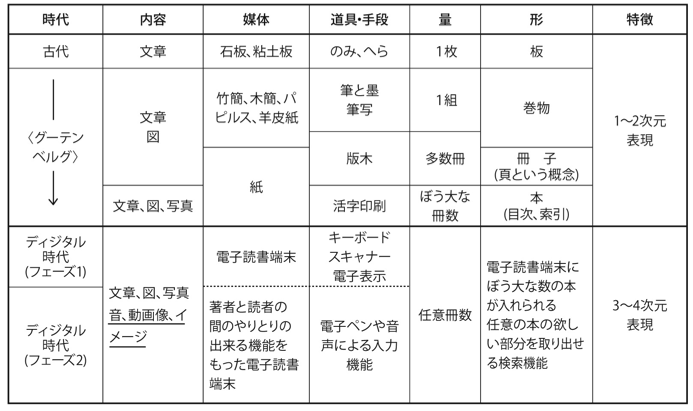
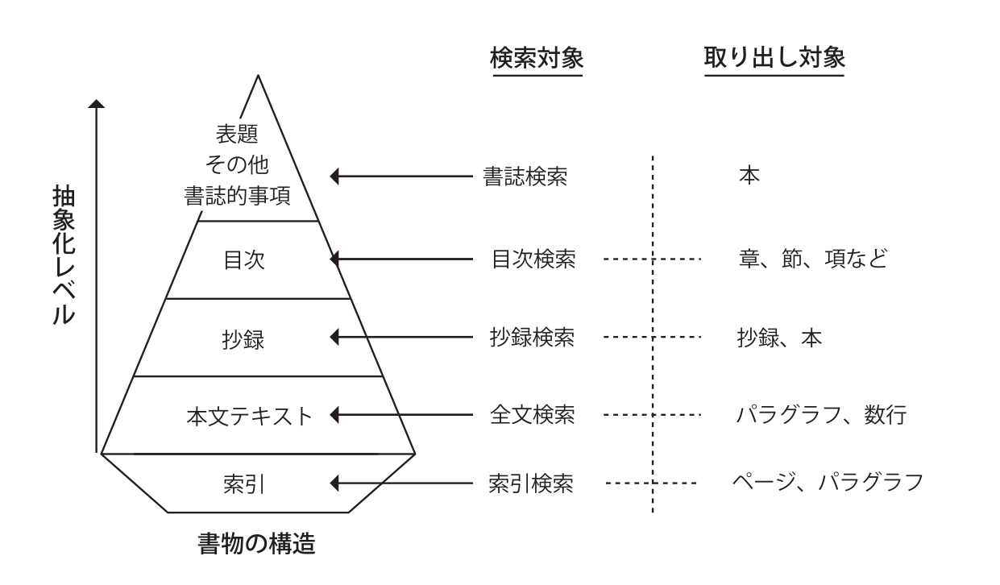

-
- 【2017年6月5日要約】
- 「電子図書館 」岩波文庫, 1994年, 長尾真
- 第2次AIブームの終盤、第3次AIブームへの助走段階
- 既存の図書や資料をデジタル化すればそれで電子図書館が実現するかといえばそうではない。あるべき姿はデジタル化された情報を縦横に使いこなし、まったく新しい知的空間を創造するための図書館である。そのために何が必要かを説く本書の構想は挑戦的かつ刺激的な未来の設計図だ。
-
- 
- 図書館の役割
- 図書館は書物を収集・保存し提供する場であるとともに、それらを使って関心のある人が集まって議論し新しい知識を創造する場
- 日本中に存在する知識情報が有機的に結合され、日本中の人が自由に使える日本の「知識インフラ」を構築することがこれからの大きな課題
- 一次情報提供の場
- 種々の検索方式を自由に組み合わせて使うことによって必要とする情報を取り出せることが保証されている必要
- 各地の図書館は一般の出版物ではなく、その地の資料や情報を収集し、電子化してサービスを行う方向の努力が求められることになる
- 地方の貴重な資料が全国の共有物となって、その地方の歴史的価値が高まるだろうし、学問も進展することになる。
- 情報の網羅性・完全性の重要さ
- データベースの完全性のようなものが利用者に分っており、あるはずのものがないとすれば検索の仕方が悪かったのだと思って、いろいろとやりなおすことも何ら気にせず行う
- 新たな知識の創造の場
- 図書館のもつ資料も提供しながら誰もがマルチメディア著作物を作れるようにすることもこれから大切になってゆく
- 読者と読者を繋ぐ場
- 議論の場の提供という図書館機能
- 解決したいという人達と研究者、そして図書館司書のグループが種々の角度から資料をもとに議論
- 考え方の違う人達が知識を共有し、その違いを議論を通じて明らかにすると共に、新しい知識・思想を作り出してゆく場
- 出版社、著者と読者を繋ぐ場
- 図書館が司書による相談サービス、あるいは自動的な案内サービスをする場合でも、自分の電子書棚を作りたいという人の多くは図書館から借りるのではなく出版社のデータベースの方に行き、書物を購入することになるわけで、図書館は出版社と読者を結合する接続業者のようになってゆく
- 場としての図書館
- 今後の電子図書館
- 進歩した検索システムをうまく使うことによって過去の忘れられていた良書が息を吹き返してくる。
- 1つの方法は書物を目次にしたがって図3.2に示すように構造化すること
- 同義語も扱えるようにすれば、同じ文でなくても意味的に同じ文を含む部分を取り出すことができる。
- 多くの書籍から自分の必要とする部分を切り出して来て自分の著述の中にうまく挿入することによって新しい著作物を創造することもできる
- 種々の知的なナビゲーションシステムが作られてゆくから、司書の世話にならなくてもある程度のレファレンスサービスを受けられる
- 自分の書棚を電子的に作れば、自分の連想に基づいて自分の本や本の部分部分をリンク付けして自分の知識の構造に合った自分図書館を作って楽しむことができる
- 図書館員の役割と資質
- 情報に関する基本情報付け（メタデータ付与）
- 情報に関する付加価値情報付け
- 関連付けに必要な典拠類の構築
- 情報間の関連付け
- 相当な博識の人でないと1つの資料に関係した他の資料へのリンクを十分に付けることが難しく、レファレンス・ライブラリアンの能力、あるいはそれ以上の能力を必要とする
- 図書館職員の選書能力が大切
- 分類・主題情報の付与
- オンラインレファレンス
- 集いの場（intellectual commons）の運営
- 情報処理システム要員
- 詳細は別途
- 出版界と書店の今後
- 書店が推奨する本の検索システムを作っておき、来客の要求にぴったりした本を推薦し、これをオンデマンド印刷で売るといったことで書店の存在価値を高めてゆく努力が必要
- 理想の図書館へ向けて「知識インフラ」の構築
- 必要な人材
- 研究グループの中に図書館的業務のできる人を置くことが必要。embedded librarian（研究協力図書館員）と呼ぶようになって来た。
- 必要な要素・機能
- 整理された研究データ類も公開され知識インフラの要素
- 知識インフラ構築における最も大切な概念は、情報を集め、これを知識化し活用することによって新しい情報・知識を創出し、知識インフラに加えるという形で循環的にこのシステムを強化・拡大してゆくことによって社会・経済に貢献することである。
- 科学技術（この中には医学、薬学、生命科学等を含む）だけでなく人文科学、社会科学（この中には法学、教育学、経済学等を含む）など全学問分野
- 創造される各種の情報、知識は研究機関、学会、データベース機関などで利用できる形
- 知識が種々の観点から組織化、構造化されて利用しやすい形で蓄積されて利用に供される
- マルチメディア情報の検索
- 類似性の検出と分類
- メディア変換
- 基礎となる学問分野
- A：自然言語分野
- B：音声・音楽分野
- C：画像・映像分野
- D：コンピュータ・ソフトウェア、情報通信
- E：知識工学、人工知能
- F：図書館学、図書館情報学
- 詳細は別途
- 人工知能と電子図書館
- 自動的な形で適切な知識の所在にまでナビゲートしてゆくシステムが開発されつつある
- 人間の持っている知識は頭脳の中にあり、種々の知識が何らかの関係性によってつながれていて、連想的に関係する知識が取りだされている
- 図書館においてもぼう大な書物の中に存在する知識が関連性をもって書物という単位を超えてつなげられ、それが取り出されることが大切であろう。
- 本のある部分に存在する単語や概念を集め、それらに近い単語や概念が存在する部分を他の本について網羅的に調べる
- 関連する知識を人間頭脳の中のネットワークのようにつないで、利用者の要求に応じて提示できるような形の電子図書館の内容の組織化が望まれているのである。
- 情報検索というよりは事実検索に近づいてゆく。
- その本のどこに書かれているかを探すというのではなく、自分の欲しい情報そのものが出てくることになる。
- ある社会において一定の教育を受けた人達の場合にはほぼ共通した知識の体系、構造というものがある
- 電子図書館における図書・資料は部品に解体され、それぞれが種々の観点からリンク付けされた巨大なネットワーク構造が作られるようにする。これは1つの社会で共有する中立的な知識構造、知識システムである。
- 個人によって違った知識の構造の部分については、その人の力によって種々の検索方式を試み、自分の必要とする情報をとり出して中立的な知識の構造に付加してゆくことが出来ねばならないし、またそれによって自分に合った知識の構造を作りあげてゆくことができるだろう。
- 個人の電子図書館が出来るし、その人の頭脳の知識の構造が反映されたものが作られてゆく
- 現実世界の本や情報の大切さ以上にヴァーチュアルな世界における情報処理と表現力の可能性にもっと大きな関心を持つべき時代に来ていると言えるのではないだろうか。
- 「分かる」ことへの道程
- 理想の電子図書館では、知識や情報が与えられるごとに、それが単なる増加知識として記憶されるのでなく、他の既存の知識との間での因果関係がチェックされ、新しい因果関係のリンクが付けられてゆくという形で発展してゆくべきである。
- 個人の頭脳内容を反映した個人電子図書館が発展してゆくことになれば、いろいろと楽しく、心を豊かにしてくれるだろうし、新しい未知のことに対する挑戦という勇気もわいてくることは間違いないだろう。
- 未来の自分の頭脳をヴァーチュアル世界に作ることであるともいえる。魅力的で挑戦的なことではないだろうか。
- 人工知能の知識構造に近づく電子図書館
- 起案連情報のリンクによる知識の構造化
- 種々の観点からの連想検索
- 時間軸に沿った知識の組織化
- 空間軸に沿った知識の組織化
- 情報検索から事実検索へ（直接答えを与える）
- 夢の図書館を目指して-書誌的事項の見直し-
- 電子書籍時代の書誌的事項と検索
- 自動書誌作成、自動分類
- 図書館分類体系の問い直し
- 配架のための分類という考え方の崩壊
- 目次検索、全文検索など、様々のレベルの検索
- AI等の活用以前に実現可能なサービス
- SNS
- 同じ作品に関心のある人と意見を交換
- 作品の著者との対話ということもありうる時代
- 組織化
- 目次情報を付けたり、本の表紙の画像や数行の簡単な要旨を付ける
- RDA
- 従来の書誌情報の考え方をマルチメディア情報に対応できるように拡張かつ詳細化するとともに、対象資料に関係する様々な種類の情報にリンクをはり、それらの情報をたどってゆけるようにする
- AI等の活用で現時点でも現実味が帯びてきたこと
- 図書・資料は部品に解体され、それぞれが種々の観点からリンク付けされた巨大なネットワーク構造が作られるようにする
- 

- 自然言語処理
- 自然言語による質問要求を受け付けて、取り出したものがその要求に対応するものであるかどうかを自然言語処理技術によって調べ、できるだけ質問要求に近いものだけを選択するといった技術を確立することが必要
- 書誌検索のような単純、単一の検索でなく、種々の検索のモードを提供することである
- 種々のあいまいさを許すあいまい検索の工夫
- 電子図書館になって取り出す単位が書籍の単位ではなく、書籍の中の章や節、パラグラフ、あるいはこんな内容が書かれている部分のみ、といった時に従来のシステムは全く役に立たない。
- 自動的な形で適切な知識の所在にまでナビゲートしてゆくシステムが開発されつつある
- その本のどこに書かれているかを探すというのではなく、自分の欲しい情報そのものが出てくることになる。
- 個人によって違った知識の構造の部分については、その人の力によって種々の検索方式を試み、自分の必要とする情報をとり出して中立的な知識の構造に付加してゆくことが出来ねばならないし、またそれによって自分に合った知識の構造を作りあげてゆくことができるだろう。
- 制度の見直しにより現実味が帯びてきたこと
- すべての人から許諾を取るのはほとんど不可能であり、再利用の道はほとんど閉ざされている。包括的な権利処理などの工夫が必要